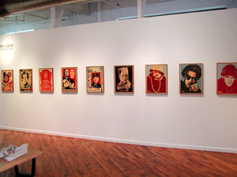
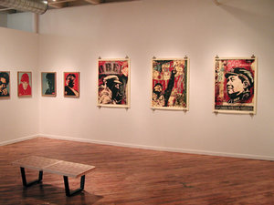
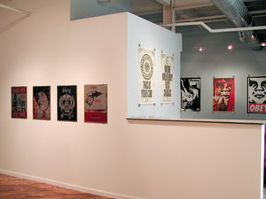
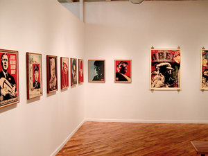

Supply and Demand (Gallery Katz)
From The Giant: The Definitive Obey Giant Site


Shepard's Supply and Demand gallery show made an appearance at Gallery Katz, Boston from September 10 until October 16, 2004.
Article from Big RED & Shiny:
SUPPLY AND DEMAND: SHEPARD FAIREY @ GALLERY KATZ
by BEN SLOAT
Gallery Katz in the South End currently has on exhibit until October 16th, a show by the artist Shepard Fairey. Famed for his ubiquitous "Obey" stickers, replete with an image of Andre the Giant, and reminding of his posse, his height, and his weight, Fairey began this popular public art project while still an undergrad at RISD in 1989. The subtext of this project was varied: while certainly an example of street art, along the lines of graffiti, Fairey, heavily influenced by the writings of Marshall McLuhan, was confronting greater issues of visual communication as well.
The familiarity of Obey was first born by the unbelievable blitz of the Obey stickers not only in the Northeast, but around world. All in all, over a half million stickers and posters were places in a variety of global public and private spaces. I can remember being in a bathroom in the Tokyo airport in 1992, confronted yet again with the passive gaze of Andre the Giant. But who is Andre the Giant and why the project? Fairey is not only activating spaces considered outside of human observation (urinals, backs of signs, hydrants, etc.) to bring a viewer into a stronger visual sensitivity to the nuances of their environment, but is also creating a familiar brand with no direct purpose. Fairey states in an online interview: "Because people are not used to seeing advertisements or propaganda for which the product or motive is not obvious, frequent and novel encounters with the sticker provoke thought and possible frustration, nevertheless revitalizing the viewer's perception and attention to detail." Seeing a brand with no product may then compel the viewer to understand their own methods of receiving information in the public sphere, of how the language of visual works.
Here in the Gallery Katz show, titled "Supply and Demand," Fairey puts himself in a different realm of expression, that of an artist within the art world. Here, the context is the art market, the site of supply and demand within the gallery walls. Surprisingly, Fairey turns the art market right on its head with his show. Whereas the typical art gallery attendee is art interested, an active consumer on a visual level with the possibility of being a financial art participant unlikely, Fairey opens up his show for purchase, for general participation. One wall of his show contains medium-sized prints priced at $40, framed prints are $90. Though one other wall has prints mounted on wood for $500, the vast majority of the art in the gallery can be purchased without incident by the average attendee of the show. This economic participation is major, changing the viewer's once passive relationship with the art object. Fairey's prints become personalized, one thinks not only of their value in the discourse of art, but also of their value in one's personal space. The prints can become cherished objects hanging in one's own home, gifts for others… as the artworks vie for a position within the viewer's imagined dwelling, the gallery itself also changes. Besides being a venue of expression, it also becomes a site of incorporation of one's taste.
Not to neglect the objects themselves, Fairey design sense is certainly original, compressing imagery of social realism of the communist era and of contemporary celebrities. One image has the rapper Slick Rick staring defiantly, wearing a beret with a red star upon it. He becomes not only a cult figure of a hip hop history, but of economic proportions as well. Does Slick Rick's presence then comment on social and economic conditions? He does now, as a hip hop Ho Chi Minh.
Review from the Boston Globe:
Boston Globe
Calendar Section, September 30 – October 6, 2004
By Cate McQuaid
Shepard Fairey has been flouting the laws of consumer culture since he was a whelp. Back in his undergrad days at Rhode Island School of Design, he mocked celebrity endorsements by printing a graphic of Andre the Giant's face on posters over the word "Obey," and by plastering the streets with them. Fairey still takes his art to the streets, but he also shows at galleries, in this case Gallery Katz, which has a pointed, comical array of his silkscreen prints on exhibit. The commentary is biting. One blares "More Militerry, less skools;" another portrays President Bush cradling a missile in his arms like a baby. Celebrities Sid Vicious and Tupac Shakur pop up as false gods alongside Castro and Mao. The aesthetic recalls early soviet propaganda posters. Fairey makes lush prints; the small ones on wood and metal have an industrial grit to them, while the large ones on paper have a rich, layered compositions. It's not just protest, it's art.
Official Gallery Katz images of the installation:
|  | 
|
{kind=link}
|  | 
|
{kind=link}
|  |  |
{kind=link}
{kind=link}
© Copyright |
|---|
| This page contains an image or images of drawings, paintings, photographs, prints, or other two-dimensional works of art, for which the copyright is presumably owned by either the artist who produced the image, the person who commissioned the work, or the heirs thereof. It is believed that the use of low-resolution images of works of art for critical commentary on the work in question, the artistic genre or technique of the work of art, or the school to which the artist belongs on the English-language website thegiant.org, hosted on servers in the United States, qualifies as fair use under United States copyright law. |